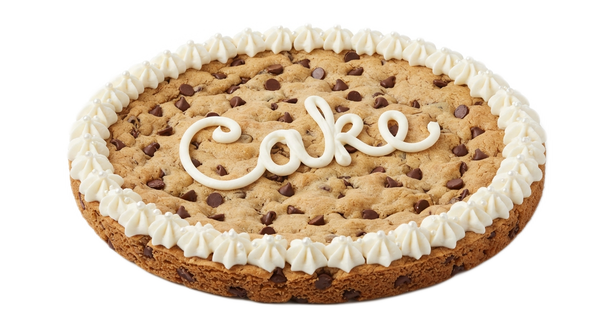

Experience
Assistant Manager

Fort Worth Texas
(Feb 2025 - July 2026)
🔵Conducted inventory assessements and weighted all stock accurately.
🔵Trained employees & compiled performance reports for management review.
🔵Managed online orders, ensuring timely fullfillment and accuracy.
🔵Oversaw orderof operations to optimize workflow efficiency
🔵SCOOPED 120 Cookies within 5 minutes. (Beyond production goal)
🔵ROLLED 12 cookie cakes in 30 minutes. (Beyond production goal)
🔵Decorate & Cut Cakes.
🔵

CLICK ON THE CAKEShift Manager (Lead)

Carol Stream Illinois
(Jan 2016 - Apr 2020)
🔵Managed emergency situation by assessing needs & coordinating emergency responses, ensuring safety & effective resolutions.
🔵Resolved conflicts between customers & staff, enhancing service experience & team dynamics.
🔵Led event planning & execution , ensuring all details were meticulously handed.
🔵Organized & managed events, ensuring seamless exectution & positive feedback.